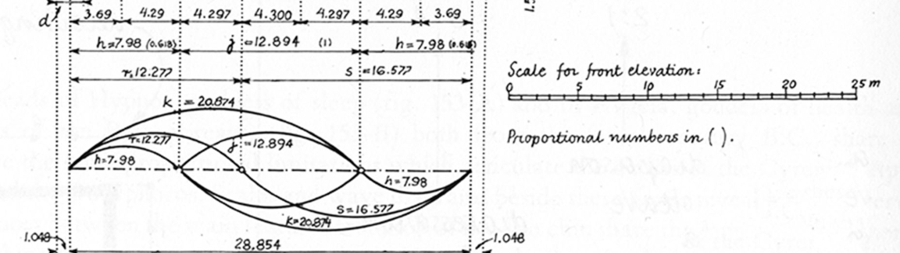

Obsesion
Los arquitectos juegan con las medidas y proporciones de los espacios. La obsesion con proporcion, razon, y apariencia relativa se ve de forlma muy clara durante la arquitectura clasica. Los numeros tienen una cierta belleza que solo se puede ver cuando se juntan relativamente con otro numero. Cuando disennamos un espacio es importante estar conciente de las decisiones de disenno sobre las medidas y proporciones de los objetos en el espacio y como se relacionan con el resto de la obra.
La proporcion y escala de un espacio son las caracteristicas que mas claramente se pueden identificar. Se ven a simple viste, y cuando experimentamos el espacio sentimos la escala en relacion a nuestro cuerpo. Es la diferencia entre sentirse achicado por un pasillo soterrado en Nueva York o sentirse como un gigante tras topar la cima de una montanna. En la arquitectura clasica se hallaron descubrimientos entre los numeros y como la proporcion de un conllevaba ornamentos en especifico dependiendo de la escala. Todo era muy calculado y lo unico que quedaba para interpretar eran las reglas del juego, las proporciones establecidas. Para poder hacer una decision logica sobre la escala y rpoporcion de un espacio es mas sabio hacer la decision basado en principios matematicos cuales han sido comprobados desde el principio de la arquitectura formal.
La razon aurea permea la naturaleza, y al principio de su existencia en la humanidad, los numeros transccendentales eran considerados tabu. Se pensaba que un numero que no podia ser representado como la razon de dos numeros enteros no deberia existir o no fuera posible que existiera. Sin embargo, muchas de las proporciones que los griegos utilizaron implementaban aproximaciones a estos numeros transcendentales, espcialmente la razon aurea. No hay una razon concreta por la cual la razon aurea es una que permea nuestra naturaleza y pensamiento, pero al parecer las proporciones como esas o porecidas son consideradas "preferibles" a otras proporciones.
Por eso es importante canalizar los numeros en nuestra via de pensamiento cuando se proporciona un espacio. Desde los detalles mas pequennos hasta los conceptos experimentales que transmite un espacio, todo deberia ser regulado por estas proporciones. Sin estas reglas del juego seria completamente arbitrario el gesto arquitectorico y perderia toda la fuerza y expresion artistica que llevaba.